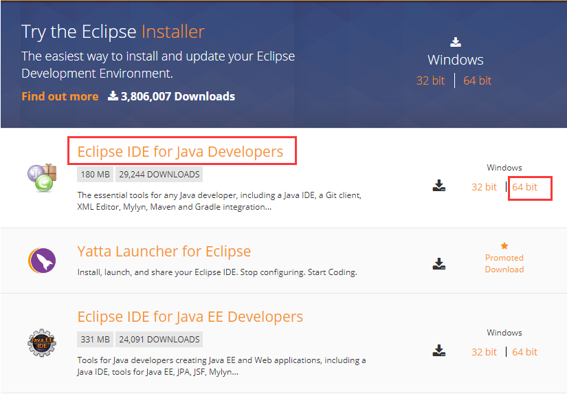
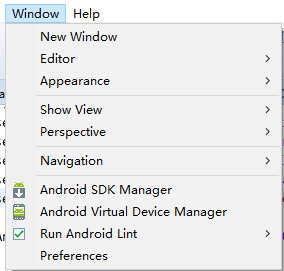

Appium环境安装(Windows环境)
Appium环境安装（Windows环境）
一、安装node.js
Appium是使用nodejs实现的，所以node是解释器，首先需要确认安装好。
1.到官网下载node.js：https://nodejs.org/en/download/，现在和操作系统匹配的版本。
2.获取到安装文件后，直接双击安装文件，根据程序的提示，完成nodejs的安装。
3.安装完成后，运行cmd，输入node –v，如果安装成功，会输出如下版本信息：
4.
二、配置Android sdk环境
1.安装jdk并配置环境变量
a) 在Java官方网站上下载相应系统的jdk文件安装，全部选择默认的安装路径即可安装完成
b) 配置JAVA_HOME, 新建 JAVA_HOME 环境变量，变量值是自己安装JDK 的路径，我的是：D:\Java\jdk1.8；
c) 配置ClASSPATH, 新建 CLASSPATH 环境变量，变量值是：%JAVA_HOME%/lib/dt.jar;%JAVA_HOME%/lib/tools.jar
d) 配置PATH, 找到PATH变量，追加如下目录：%JAVA_HOME%/bin;%JAVA_HOME%/jre/bin;
e) 验证安装是否成功
2.Android SDK环境搭建
a) 安装Eclipse

b) 安装ADT插件
启动Eclipse，点击菜单Help -> Install New Software
在弹出的菜单中，点击Add，输入名称，然后在URL中输入：http://dl-ssl.google.com/android/eclipse/
之后点击Next，选择勾选ADT和NDK插件，选择安装即可，安装过程比较慢，需要耐心等待。
安装完成后，重启Eclipse后，点击Windows，在Windows下可以查看安装好的ADT插件。

c) 安装SDK Tools
解压下载下来的文件，尽量不要解压到带有中文路径的文件目录下，目录也不要过深，我的目录为：D:\Program Files\adt_bundle。
d) 配置Android SDK环境变量
i. 新建 ANDROID_HOME 环境变量，变量值是SDK解压的路径，我的是：D:\Program Files\adt_bundle
ii. 追加sdk如下目录到PATH变量
1.tools目录：%ANDROID_HOME%\tools
2.platform-tools目录：%ANDROID_HOME%\platform-tools
3.build-tools目录：%ANDROID_HOME%\build-tools\android-4.3
iii.配置Eclipse的ADT插件
1.双击打开eclipse，点击菜单栏中的选项 Window—>Perferences
2.在打开的对话框中，查看第二选项 Android，后面有一个 SDK Loaction，如果在 SDKLocation 后面没有内容，则通过点击后面的按钮【Browser】按钮，找到自己所配置的SDK文件目录下选中， 然后点击【Apply】，如直接有路径可忽略，然后点击【OK】就好了。
配置完成后，在命令提示符下输入adb命令，看到有回显信息的时候，说明Android的环境命令已经安装完成。
3.虚拟机设置
- 打开eclipse，点击菜单栏中的选项 Window—>Android Virtual Device Manager，可以用来管理android emulator
- 点击【create…】可以新建虚拟机
- 选中虚拟机，然后点【Start】就可以启动该虚拟机
- android虚拟机启动比较慢，需要耐心等待，启动好后如下图